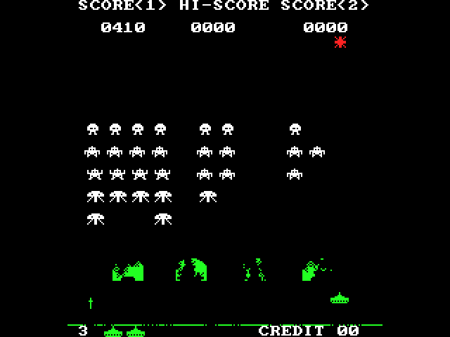
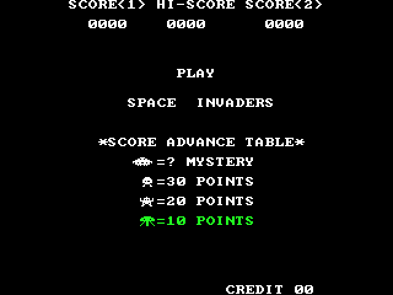

Space Invaders
The 1978 arcade game, played on the LCD shield with its game pad, in pure Verilog: no CPU, no program and no frame buffer.

Once per frame, inside the vertical blanking, one game step moves everything by the arcade's rules, in at most 1,351 of the blank's 28,000 clocks; then every pixel is worked out from the game's registers as the screen scans it. The screen and the game ask the same logic what is lit at a pixel, so the shot hits exactly what you see. The rules come from the commented disassembly of the arcade's program and from MAME; the pictures are our own, at the arcade's sizes. Ten test presets reach known moments of a game, and the board's screen, read back over USB, matches the simulation pixel for pixel.
No bitstream in the repo (a .sof is 3 MB per project): restore the .qar or use the sources here,
one build makes it in a few minutes. The user guide has every command.
Resources
The last build: MAX 10 10M50DAF484C7G, Quartus Prime 17.1.0 Lite, 00:02:57 to build. Made by python scripts/de10.py report projects/invaders --html.
| Resource | Used | Of the device | What uses it |
|---|---|---|---|
| Logic elements (area) | 7,170 | 49,760 (14 %) | game (inv_logic) 4,014; draw (inv_draw) 1,197; debug (debug_link) 508; pad (gamepad) 385; sound (inv_sound) 250 |
| Registers | 1,964 | - | game (inv_logic) 873; pad (gamepad) 324; deb (debounce) 168 |
| Memory bits | 955,136 | 1,677,312 (57 %) | debug (debug_link) 921,600; screens (Screens_dispaly) 16,384; game (inv_logic) 12,288; uart (jtag_uart) 4,096 |
| M9K memory blocks (9 kbit each) | 120 | 182 (66 %) | debug (debug_link) 114; game (inv_logic) 2; screens (Screens_dispaly) 2; pad (gamepad) 1 |
| Multipliers (9-bit elements) | 0 | 288 (0 %) | |
| PLLs | 2 | 4 (50 %) | pad/adc_pll clk[0] 10.0 MHz; pll clk[0] 25.0 MHz; pll clk[1] 50.0 MHz; pll clk[2] 100.0 MHz |
| Pins | 101 | 360 (28 %) | |
| ADC blocks | 1 | 2 (50 %) | |
| JTAG hub (USB link) | 1 | 1 (100 %) |
| Clock | Runs at | Fmax (slow model, 85 °C) | Setup slack |
|---|---|---|---|
| altera_reserved_tck | 10.0 MHz | 141.2 MHz | 46.459 ns |
| clk50 | 50.0 MHz | - | - |
| pad/adc_pll clk[0] | 10.0 MHz | - | - |
| pll clk[0] | 25.0 MHz | 41.7 MHz | 16.022 ns |
| pll clk[1] | 50.0 MHz | 125.09 MHz | 12.006 ns |
| pll clk[2] | 100.0 MHz | 332.45 MHz | 4.111 ns |
Timing: met, worst slack +0.065 ns (all corners, setup, hold, recovery, removal).
Three clocks come out of one PLL (the second PLL and the ADC block belong to the library's game-pad reader, which
makes its own 10 MHz for the MAX 10 ADC). The 25 MHz pixel clock runs the whole game: the step sequencer
(inv_logic), the picture (inv_draw), the buzzer (inv_sound), the 7-segment digits and
the USB link. The 50 MHz clock runs the game pad (gamepad with its 5 ms debounce; the eight buttons
cross into 25 MHz through two flops each). The 100 MHz clock belongs to the library's LCD writer inside
Screens_dispaly. The biggest user is inv_logic, 4,014 logic elements and 873 registers: the
sequencer and the whole game state (55 alive bits, the 224-bit ground line, the rack's two references, the shot, three
bombs, the saucer, the scores), and a second copy of inv_layers (461 logic elements), the probe through which
the game asks the screen's own logic what is lit at a pixel. inv_draw is next, 1,197 logic elements and no
registers at all: one combinational path from the scan counters to the colour, with at least 16.0 ns to spare in the
40 ns of a pixel (the slowest 25 MHz path runs through it into the screen-capture memory). No multipliers. Nearly all the memory, 921,600 bits in 114 M9K blocks, is the screen capture buffer of
debug_link (every 2nd pixel and line, 320 × 240 × 12 bits): it exists only so a PC can read the
picture back over USB for the tests. The game itself needs 6 blocks (33,536 bits): its text RAM and shield RAM (2), the LCD
command list (2), the JTAG UART (1) and the ADC's sample store (1).
Contents
- Resources
- What you will see
- Block diagram
- How it flows
- Numbers
- How it was tested
- Review log
- Status and what is next
- Files
What you will see

de10.py screen): 0 of 76,800 pixels different from the simulation.Plug the board in with the shield on and load the design. It starts in the attract mode, as the arcade does: the score
line, PLAY and SPACE INVADERS typed one letter at a time, the score advance table, a short silent demo game in which the
cannon plays itself, INSERT COIN, and round again. Select on the game pad is a coin and Start starts a one-player game
(KEY1 and KEY0 do the same on a bare board; the shield covers them). 55 invaders in five rows march sideways, one invader
per frame, the ripple of the arcade, and step down 8 lines at each edge; the fewer are left, the faster they march. The
joystick moves the cannon and A or B fires, one shot at a time. Three kinds of bombs fall; the four shields wear away
pixel by pixel where shots and bombs burst; the saucer crosses the red band at the top, worth 50 to 300 points by the
arcade's shot-count table. The colours are the arcade's cellophane overlay, bands across a one-bit picture: red at the
top, green over the shields and the cannon, white elsewhere. The arcade's monitor stood on its side; its 224 × 256
picture stands upright in the middle of the LCD's 320 × 240 (2 × 2 pixels on a VGA monitor), with its
always-empty first and last 8 lines left out. The buzzer plays the four-note march, the shot, the hits and the saucer's
siren, and the shield's status LED is lit while the saucer is out. The 7-segment digits show the score and the credits,
LEDR0..6 one LED per spare ship. SW1..SW0 (ships per game, 3 to 6) and SW2 (the extra ship at 1,000 points instead of
1,500) are the arcade's DIP switches, read when a game starts. Letters typed over the USB cable
(de10.py send) play the game too, pause it, make the cannon invincible, mute it, or call up one of ten test
presets: known moments of a game that the simulation draws as well (the guide lists
them).
Block diagram
One clock runs the game. The game pad needs 50 MHz for the library's ADC reader; its debounced buttons are slow levels,
so two flip-flops bring each one into the 25 MHz pixel clock, as they do for KEY and SW. The LCD's 100 MHz writer crosses
inside the library's Screens_dispaly. There is no frame buffer: inv_draw reads the registers and
the two RAMs of inv_logic directly, pixel by pixel. That is safe because they change only during a step, and a
step ends long before the first visible line (at most 1,351 of the blank's 28,000 clocks). The one exception is a preset:
its steps run back to back for well under a second, so the picture may tear until it pauses. The blocks are split by
when they work: invaders_top at every clock, inv_logic once a frame, inv_draw
at every pixel. Only the per-pixel part has to be parallel; the game itself is one sequential machine that visits each
object in turn, which keeps the whole design at a seventh of the chip.
How it flows
- The tick and the controls. At the falling edge of VGA_VS the screen has drawn its last visible line;
35 blank lines (28,000 clocks, 1.12 ms) follow before the first visible pixel.
invaders_topturns that edge into the one-clocktick. The joystick moves the cannon, A or B fires, Select (or KEY1) puts in a coin, Start (or KEY0) starts. A letter typed over USB is held for a few frames, so a step sees it as a press:landrfor 16 frames (each cancels the other),a(fire) for 3,c(coin) ands(start) for 2. - One step. At the tick,
inv_logic's sequencermswalks once through its states, most of them one clock each. First the mode's work (the attract mode, the credit screen, the intro, play, game over); then, in play: the rack's edge test (is anything lit in column 213 when it moves right, or column 9 when it moves left, on lines 40..223? then the rack turns and steps down 8 lines at the end of this sweep); the cannon, 1 pixel; the shot, 4 lines up, then a probe of the 4 rows it crossed, a hit decided in the order invader, saucer, bomb, shield; one bomb slot in turn (rolling, plunger, squiggly; the squiggly's turn goes to the saucer while it flies or is due); the saucer; the next live invader moves (the arcade's ripple, one invader a step) and the march plays its next note when its timer runs out; the checks (an explosion's timer, the wave's end, the extra ship); the 27 characters of the score line and the ships line. Everywhat is lit here?
setsp_x,p_yon the secondinv_layers, the same logic that draws the screen. A burst on a shield clears its bits in the shield RAMsmem; text goes into the text RAMtram. The bound is 1,351 clocks; the longest the full simulation saw was 1,064. - Every pixel. As the visible lines scan,
inv_drawhalves the 640 × 480 counters to the LCD's 320 × 240 (lx,ly) and turns them into the arcade's pixel: x = lx − 48, y = ly + 8; the 48 columns on each side stay black. The two RAMs answer one clock late, so they are asked with the next pixel's address.inv_layerssays, for that one pixel, whether the rack, an invader's explosion, the cannon, the shot, a bomb, a burst, the saucer, a shield or the ground line is lit there; the text comes from the text RAM, throughfont8x8for the letters and the sprite ROMs for the icons (the cannon, the invaders, the saucer). The band the pixel is in colours it red, green or white.rgbleaves in the same clock, with no register in the way, andScreens_dispalysends it to the VGA pins and writes it to the LCD at 100 MHz. - Sound and lights.
inv_logicsends one-clock triggers (a shot, a hit, the cannon's explosion, the saucer hit, the extra ship, the next march note) and holdssnd_ufohigh while the saucer flies. Once a frameinv_soundtakes the highest-priority sound still playing and sets the half-period of one square wave: the march's G3, F3, E3, D3 (196, 175, 165, 147 Hz), the shot falling from 4.2 to 1.2 kHz, the saucer's siren between 750 Hz and 1.4 kHz; the explosions are noise from a 16-bit LFSR. The buzzer is silent when muted, during a preset and during a pause. The shield's status LED is lit while the saucer is on the screen; the 7-segment digits show the credits (HEX5, HEX4) and the score (HEX3..HEX0); LEDR0..6 light one LED per spare ship. - Letters and presets. A letter typed on the PC comes through
jtag_uartanddebug_link:?andFare answered there (the status line, the screen capture), and every letter also reachesinvaders_top. A digit resets the game and runs a known number of steps back to back, 120 to 30,000, with LEDR7 lit meanwhile: preset 0 stays in the attract mode, 1 to 9 start a game that the invincible demo player plays, with 3 ships and the extra ship at 1,500. Then it pauses (LEDR8).pplays on from there, by hand: the demo player and the invincibility are gone.mmutes the buzzer;imakes the cannon invincible (LEDR9).
Numbers
The figures that are not resources (those are at the top).
| Frame rate | 25 MHz / (800 × 525) = 59.52 frames a second (the arcade's: 59.54); one game step per frame |
| Step budget | the blank: 35 lines, 28,000 clocks (1.12 ms). A step's bound: 1,351 clocks (4.8 %), every state's longest path added up; the longest in the full simulation: 1,064 (3.8 %) over 89,600 steps |
| Picture | the arcade's 224 × 256 portrait, lines 8..247 shown, in the middle of the LCD's 320 × 240 (2 × 2 pixels on VGA); one bit a pixel, coloured by bands (red on lines 32..61, green on lines 184..239 and on columns 16..133 below them, white elsewhere); no frame buffer |
| Pixel path | no register from the scan counters to the colour: 23.9 ns at worst, at least 16.0 ns to spare in the 40 ns of a pixel (the slowest such path runs on into the screen-capture memory) |
| Game memory | the text RAM tram, 1,024 × 8 = 8,192 bits; the shield RAM smem, 256 × 16 = 4,096 bits, true dual port (the game and the screen): 2 M9K. 873 registers hold the rest of the state. The pictures are logic, not memory |
| Sound | seven sounds by priority: the cannon's explosion (64 frames of falling noise), the saucer hit (40, a fast warble), the extra ship (48, three 1.5 kHz beeps), an invader hit (16, noise), the shot (12, 4.2 → 1.2 kHz), the march, the saucer's siren (as long as it flies); noise from a 16-bit LFSR (seed 0xACE1, taps 15, 13, 12, 10) |
| Build | 2 min 57 s. 84 warnings, none from this project's own files: 3 pins stuck at VCC or GND (the LCD's read line and two unused ARDUINO_IO pins), the library's known notes (vga_controller's truncations, lcd_ctrl's unread counter, the LCD command list's uninitialised tail, the JTAG UART's RAM and SDC), the ADC IP's own notes, and the two expected Critical Warnings 16248 (VGA_HS and VGA_VS sit next to the ADC pins) |
| Simulation | tb_invaders in Icarus: the full run, 89,600 game steps and 89 checks, about 26 minutes (preset 9 alone, 30,000 steps, about 8); the QUICK run (-D QUICK: presets 0..2 only), 10,093 steps and 82 checks, about 3 minutes |
How it was tested
Without the board
sim/tb_invaders.sv runs the game, the screen and the sound together (inv_logic,
inv_draw, inv_sound; everything but the board's I/O) with its own clock, tick and pixel scan, and
plays one long session in 17 sections: power-up; the attract mode, its typed text and the silent demo game (the demo
game lasted 2137 steps; its cannon fired 47 shots
); two coins; the start and the intro; the first wave in place; the
cannon's moves, its edge and the pause; the march; a shot into a shield; the first bump; columns 4 and 5 shot away
through the gap between two shields (columns 4 and 5 took 547 steps
); the 300-point saucer, by counting the shots
(the 300-point saucer took 1225 steps (play step 2271)
); the rest of the wave, shot down by a bot (45 of 45
invaders hit as the bot predicted
, 990 points for the 55); the next wave, 24 lines lower; three deaths and game over,
with one explosion sound per death; the hi-score and the credit screen; a second game with a low rack (below); the ten
presets; the timing budget (longest step 1064 clocks; 89600 game steps
). Result: PASS (89600 game steps)
,
89 checks, about 26 minutes in Icarus.
A monitor checks the rules after every one of the 89,600 steps: no unknown (X) bit in the game's state; the count of
live invaders equals the alive bits; the cannon stays between x 16 and 185; the score never goes down; a saucer is worth
the table's entry for the shots fired, shows it and adds it; the extra ship comes only at the bonus score and adds one
ship; an empty wave is cleared. Rule A: every live invader is on the screen, its coordinates taken modulo 256 like the
arcade's. Rule B: a lit pixel of the next live invader, from the testbench's own model of the rack, is put on a second
copy of the rack's pixel logic, which must answer lit, by that invader
; the same logic draws the screen and
decides the shots.
Clearing a wave before it lands takes a good player. Before every step the bot plays the rack forward exactly as
inv_logic will move it (one live invader a step, the bump, the drop, the freeze while an invader explodes,
the shot still in flight). For the lowest invader of each column it finds where a shot fired d steps from now would meet
it, through a gap in the shields and past the falling bombs, walks to the cheapest such place (edge columns first: a
narrower rack drops less often) and fires when d is 0. A first, nearest-first bot let the rack land (review log).
In the second game the rack's two top rows are past line 255: the arcade's coordinates are 8 bits and wrap. The test
checks that the rack is drawn (935 lit pixels, 0 of them black
), shot (the shot at x 120 hit invader 38 after
98 steps
), turned at the edge and landed. It came from a bug that preset 7 showed (review log). With the old rack
logic put back, the test fails 1,631 checks (935 lit pixels, 755 of them black
and rule B's a live invader is
not drawn where it is
): the test does catch that bug.
The test writes its frames the way the board's capture reads the screen (every second pixel and line,
320 × 240): attract, demo, credit, intro, play,
columns, wave2, gameover, rack_low and preset_0 to
preset_9, as .ppm files next to the testbench.
python scripts/sim.py projects/invaders/sim/tb_invaders.sv runs it all; with -D QUICK it runs
presets 0..2 only (10,093 steps, 82 checks, about 3 minutes).
On the board
The board was programmed and each preset called up over USB, the screen read back and compared with the simulation's
frame: de10.py send 5, de10.py screen logs/board_5.png,
screen_check.py logs/board_5.png sim/preset_5.ppm. All ten presets: 0 of 76,800 pixels
differ. A first try, on an earlier build, differed in presets 1 to 9, and only in the ships row: a preset took its
ships from the switches, and the board's were up. Now the switches are read when a game starts, and a preset sets its
3 ships itself.
Checked by hand
Not yet. Playing with the game pad, listening to the buzzer, a wave played by hand, KEY0 and KEY1 on a bare board, and
the switch settings other than all down (the only one simulated) need a person at the board; the status table below
lists them. The webcam capture (de10.py cam) failed on the build PC, so there is no photo of the board
yet.
Review log
Every source was read once, whole, before the pages were written; what it found, and what the tests and the board found, with the fix.
| Found | Cause | Fix |
|---|---|---|
Review: invaders_top gave the six digits 32 bits | {credits, 8'h00, score}: a spare zero byte; the 24-bit port kept the low 24 bits, so the credits never showed | {credits, score}: HEX5..4 the credits, HEX3..0 the score |
Review: a width warning in inv_layers | a loop index (a 32-bit genvar) passed as a bomb's 2-bit kind | a sized constant for each loop step, localparam [1:0] KIND |
Review: a width warning in inv_draw | the next pixel's column (the RAMs are asked one pixel early) was a mixed-width expression | a sized wire, wire [8:0] npx = nx[9:1] - 9'd48 |
| Review against the arcade's code: the squiggly bomb's columns | its pointer into the column table wrapped from 20 to 0, not to 6, and neither bomb's pointer restarted with a new rack (the arcade restores both at every rack) | the wrap goes to 6; start_wave sets the plunger's pointer to 0 and the squiggly's to 6 |
| Review: the slide switches went into the game straight from the pins | an oversight; the keys had two flip-flops | two flip-flops (sw_m, sw_s) in invaders_top |
| Board, an earlier build: presets 1 to 9 differed from the simulation, only in the ships row | a preset took its ships from the switches; the board's were up, the simulation's down | the switches are read when a game starts; a preset sets 3 ships and the bonus at 1,500 itself; then 0 pixels differed |
| Simulation: section 12, the rest of the wave, failed: the rack landed | a nearest-first bot left the rack wide, so it reached the edges often: about 8 drops | the predictive, edge-first bot (above), which knows the 16-step freeze; and a #1 at the end of the testbench's step(): the monitor counts a step on the same clock edge, so the test now waits for it before reading the counts |
| Checking against MAME: the red band was 2 lines too tall | lines 32..63 had been assumed | lines 32..61, from MAME's overlay file invaders.lay |
| Checking against the arcade's code: the attract mode's demo player cycled 12 moves | the commented listing suggests 12; the code itself ($1652..$1667) wraps its pointer from $7E back to $74, so only 10 are used | a 10-entry table, dm_ptr wraps at 9 (read the code, not the commentary) |
The guide called a red splat at the top the saucer exploding | a guess from small captures: it is the shot bursting at the top of the screen, coloured by the red band | the guide's preset table rewritten from zoomed captures |
| Preset 7: invaders vanished from the second rack | the rack's reference line had passed 255 and wrapped (8 bits, as in the arcade), and inv_rack_pixel compared lines as plain numbers | the comparison done modulo 256 (u = ry + 8'd7 - py); section 15 tests it; the old logic fails 1,631 checks |
| A build failed | its console output had been redirected into logs\build.log, the file de10.py build writes itself | the console goes to its own file, never to build.log |
Status and what is next
| Item | Status |
|---|---|
| The ten test presets, pixel for pixel | verified: simulation and board (0 of 76,800 pixels differ, all ten) |
| The rules: the rack, the shots and hits, the bombs, the shields, the saucer's table, the extra ship, waves, deaths, game over | verified: simulation (17 sections, 89 checks, the monitor after each of 89,600 steps) |
| The attract mode, coins, the credit screen, the intro | verified: simulation; the attract screen also on the board (preset 0) |
| The step budget: every step ends in the blank | verified: simulation (the longest, 1,064 of 28,000 clocks) |
| The sounds: triggers, priorities, the buzzer toggling | verified: simulation (the march, the shot, one explosion per death) listen to them |
| Playing with the game pad (joystick, A, B, Select, Start); the status LED, the LEDs and the digits | to do by a person |
| KEY0 and KEY1 on a bare board; the switches (ships, bonus) other than all down | to do by a person (only all down is simulated) |
| A wave played by hand | to do by a person |
In the flash: starts by itself at power-up (de10.py flash) | verified: board (written and verified by the programmer; presets 1 and 9 read back from the flashed design, 0 of 76,800 pixels differ) watch it start by itself after a power cycle |
| A photo of the board | to do by a person (the webcam failed) |
| Two players, the cocktail cabinet, the tilt switch, the arcade's analog sounds | left out on purpose (the arcade's numbers: taken, assumed, chosen, left out) |
| Possible next steps | two players taking turns; the hi-score kept in the MAX 10's user flash |
Files
| File | What it is |
|---|---|
index.html, spec.html, guide.html | this overview, the architecture spec, the user guide |
invaders.qar | the whole Quartus project (de10.py pack) |
invaders.qpf, .qsf, .sdc | the Quartus project, pins and timing constraints (scripts/new_project.py) |
src/invaders_top.sv | the pins, the PLL, the game pad, the clock crossings, the tick, the letters and presets, the LEDs and digits, the display chain, the USB link |
src/inv_logic.sv | the game: the step sequencer, the game state, the text RAM and the shield RAM, the probe |
src/inv_layers.sv | which object is lit at one pixel; used twice, to draw and to probe |
src/inv_rack.sv | inv_rack_pixel: the 55 invaders at one pixel, modulo 256 |
src/inv_draw.sv | the screen: the field, the text, the colour bands |
src/inv_sound.sv | the buzzer: seven sounds by priority, one square wave |
src/inv_sprites.sv | the pictures as logic (invaders, cannon, saucer, bombs, bursts, shield), written by assets/make_sprites.py |
src/extra.qsf | makes de10.py pack carry the sprite generator in the archive |
assets/make_sprites.py, assets/sprites_preview.png | the sprite generator (our own pixel art, at the arcade's sizes) and its preview |
sim/tb_invaders.sv | the testbench: 17 sections, the monitor, the bot, the frames |
media/screen_*.png | screens read back from the board |